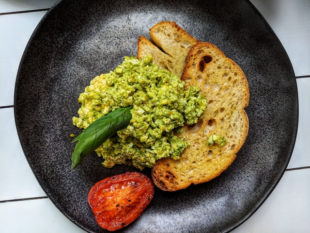

Home-made Pesto

Ingredients
- Basil, three cups
- Cheese, parmesan preferred, 3/4 cup
- Olive oil, 1/2 cup
- Pine nuts, 1/4 cup
- Fresh garlic, 4 cloves
- Lemon juice, 2 tsp
Preparation
- Lightly toast the pine nuts.
- Combine the ingredients in a food processor or blender.
- Blend until smooth. Enjoy!